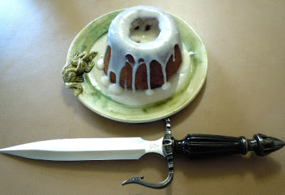

Sweet Rolls
From the Elder Scrolls V: Skyrim
Recipe brought to you by The Geeky Chef
Ingredients
| For the Cake | For the Filling | For the Icing |
|---|---|---|
|
|
|
Directions:
This recipe makes two sweet rolls. Depending on how many oven-safe measuring cups you have, you can either make one at a time or both at once.
- Preheat oven to 350.
- Mix dry cake ingredients together.
- Separately, mix wet cake ingredients together.
- Add wet ingredients to the dry ingredients and mix thoroughly.
- Spray your oven-safe glass measuring cup with non-stick cooking spray.
- Add your batter to the measuring cup to the 1 cup or the 1 1/2 cup line, depending on how tall you want it.
- Bake at 350 degrees Fahrenheit for 30 minutes or until your can stick in a knife and it comes out clean.
- Remove measuring cup from the oven.
- Let the cake cool. Once cake is cool, remove it from the measuring cup carefully so it does not break.
- The cake is going to be upside down (so the wider part is at the bottom) and may be awkwardly rounded on the bottom side. To fix this, simply cut off the rounded bottom with a knife to make it level.
- Set the cake down with the wider leveled side on the bottom.
- Use a spoon or fork to carve a hole at the top of the cake, this is where you will put the filling.
- To make the filling mix together the butter, pecans, cinnamon and brown sugar. Stuff the mixture into the hole you created.
- For the icing, whisk together the softened cream cheese, powdered sugar and milk until smooth and thick.
- Gently pour the icing on top of the cake.
- Serve or have it all to yourself!
Remember, in Skyrim, stealing a sweetroll is punishable by a night in jail.
Original Recipe
Contact
zachary.leach@umontana.edu